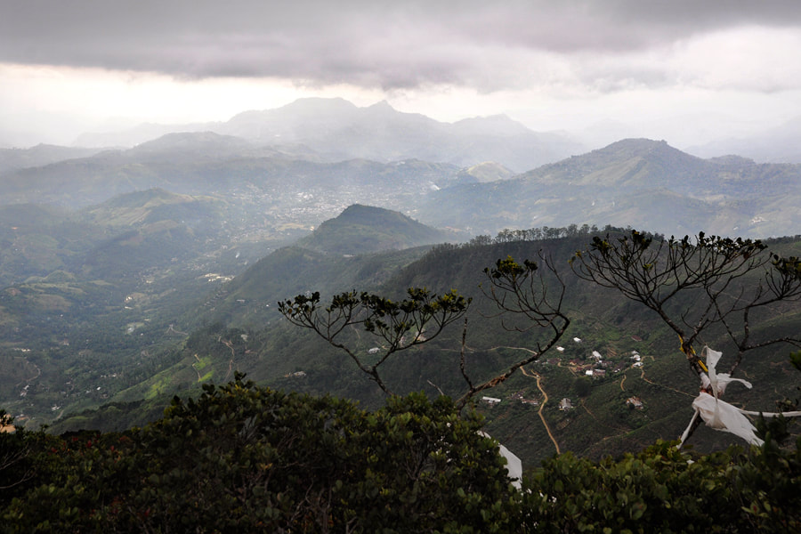

The majestic mountain range dominating the Badulla skyline, offering challenging treks and panoramic views across the province.
The Namunukula Mountain Range is the most prominent geographic feature of the Badulla district. Reaching a peak of 2,035 meters, it is the highest point in the Uva province and provides a spectacular backdrop to the city. The name "Namunukula" translates to "Nine Peaks," referring to the range's world-famous nine separate summits.
Trekking to the main summit is a challenging but incredibly rewarding experience. The path leads through tea plantations and montane forests, offering a unique insight into the island's high-altitude wilderness. Reaching the peak on a clear day provides panoramic views that extend all the way to the southern coast of the island. It's an experience that captures the true essence of Sri Lanka's central highlands and the timeless beauty of the Cultural Triangle transition.
Back to Badulla Hub